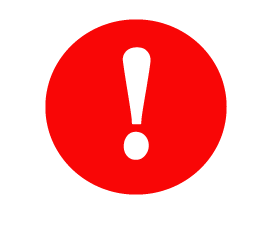
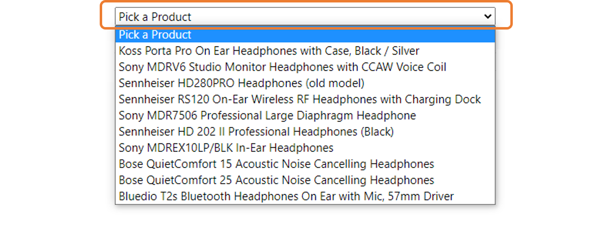
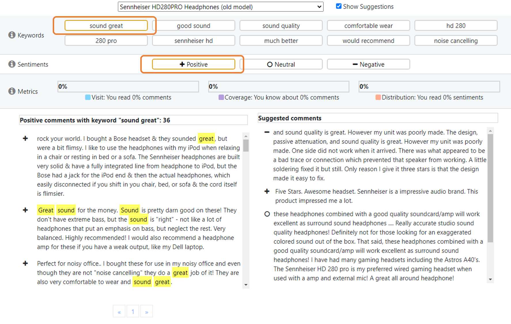
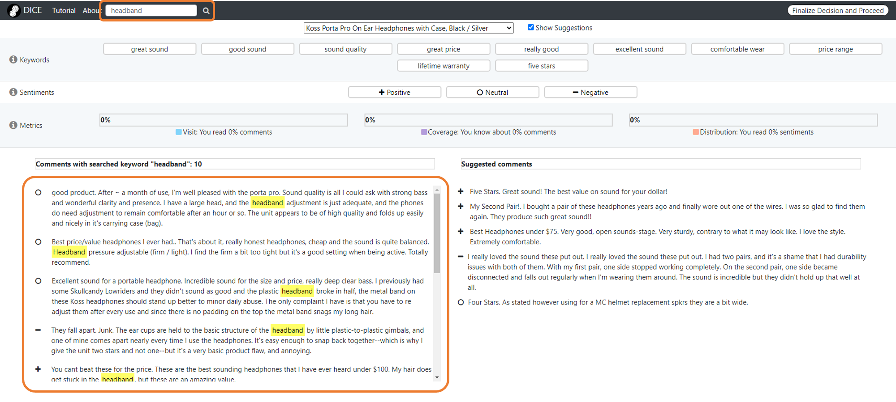
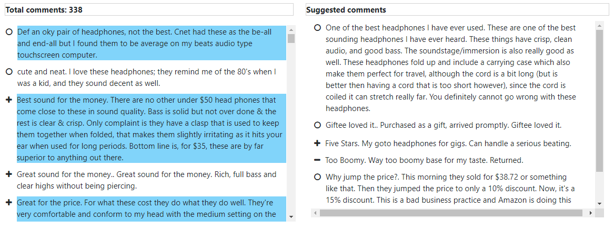
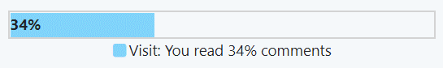
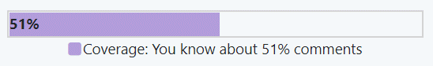
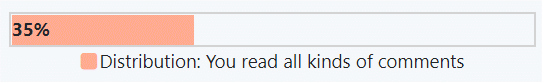
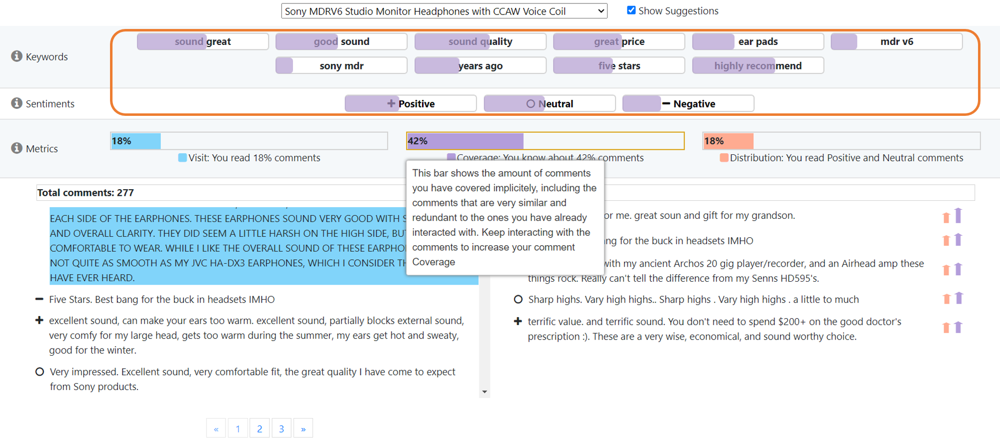
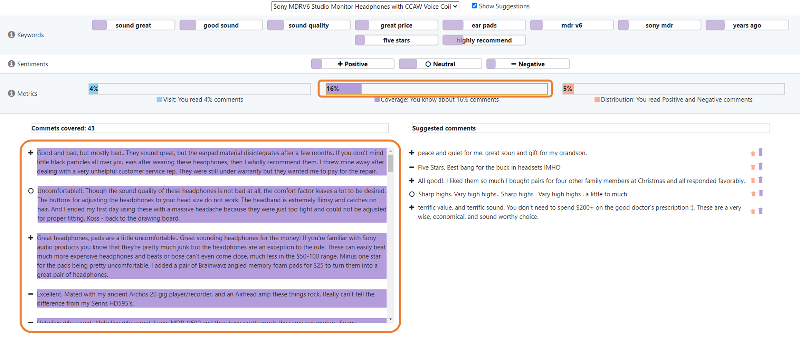

Objective and Tutorial
This tutorial introduces the study objectives and various functionalities of this tool called DICE. You can access this tutorial anytime from the navigation bar.
Refreshing the page will result in losing all progress. Please do not refresh the page unless you want to start over.
Study Objective:
In this step of the study you will thoroughly explore the product reviews from 3 headphones and decide which particular headphone you would refer to someone. After you have made the final decision, click the finalize button at the top right of the navigation bar. A post study questionnaire will follow that will ask you a few questions about your decision-making process. Once you have answered all questions, proceed to M-Turk and finish the study.
Tutorial
Selecting a Product:
Click on the dropdown to select a product to explore. You can switch between the products at any time.
Interface Features:
The interface has the following features:
- Keywords: These are the most frequent keyword pairs that are present in the review comments.
- Sentiments: These categories represent different sentiments present in the review comments.
- Exploration metrics: These metrics (Visit, Coverage, and Distribution) provide you with tracking information based on your exploration of the review comments. Visit information shows the amount of comments you have interacted with directly by clicking or hovering over them for 3 seconds. Coverage information shows the amount of comments you have covered implicitly, including the comments that are very similar and redundant to the ones you have previously interacted with. Finally, Distribution information shows the proportion of comment sentiments you have directly interacted with.
- List of comments: The list provides the comments alongwith their associated sentiments.
- List of suggested comments: The list provides the comments suggested based on your interaction with other comments.
Filtering comments:
Select the keywords and sentiments to filter the review comments accordingly. You can use a keyword pair and a sentiment at the same time. If you select keyword pair, they will be highlighted in the comments where they appear.
You can also use the search option in the navigation bar to search for any keyword of your choice. The keyword you searched will be highlighted in the comments where they appear.
Interacting with the comments:
You can select or hover on a comment for a while to mark it as read. DICE will keep a record of your progress and track the comments you are interacting with.
Exploration metrics:
The exploration Mmetric bars provide information on how you have been exploring the comments. The are three metrics bars.
Visit: Visit presents the number of comments you have read and marked as read by clicking or hovering on it for more than 3 seconds. It essentially tells you how many comments you have already looked at. In the example below, you have read 34% comments.
Coverage: Coverage presents the amount of comments you have knowledge about based on your interactions with comments. Oftentimes, there are comments that are similar and redundant to the comments you have already read. Essentially, it tells you how many redundant comments you implicitely have knowledge on. In the example below, you have covered 52% comments despite visiting or reading 34% comments. The extra 18% (52% - 34%) comments are similar and redundant to the comments you have read already.
Distribution: Distribution presents what kind of sentiments you have been exploring. It essentially tells you whether you are focusing on comments with similar sentiments or your are exploring all sentiments comprehensively. In the example below, you have covered 35% of sentiments and have been reading all 3 kinds of comments.
Hovering over any of the metric bars will show the comment exploration progress corresponding to the most frequent terms and sentiments.
Clicking on any of the metric bars will filter the comments and only show the comment associated with your selection. In the following example, only the Coverage metric bar is selected. The comments are filtered accordingly and only comments that are covered are shown.
Suggested comments
Depending on your exploration history (the comments you have been interacting with, DICE will provide
you with suggested comments from the the comments that you have not visited yet. You can use the checkbox
beside the product selection dropdown to toggle the suggestions on
or off. You can also interact with the suggested comments similar to regular comments. You can click or
hover on the suggested comments for 3 seconds to mark them as read. Once you interact with regular comments
or suggested comments with the suggested comments window open, DICE will provide you with newly
suggested comments based on your interactions. Suggesting comments takes some time. Please wait until
the wait spinner ( ) stops moving completely
before marking another comment as read to get new suggestions. The metric arrows tell you how the
metrics will increase if you read and mark the associated suggested comments. The larger the arrow, the
larger
the increase in the associated metric.
) stops moving completely
before marking another comment as read to get new suggestions. The metric arrows tell you how the
metrics will increase if you read and mark the associated suggested comments. The larger the arrow, the
larger
the increase in the associated metric.